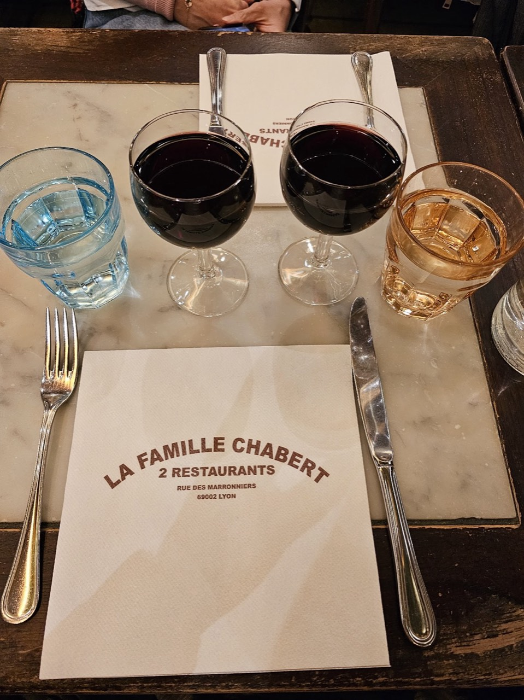
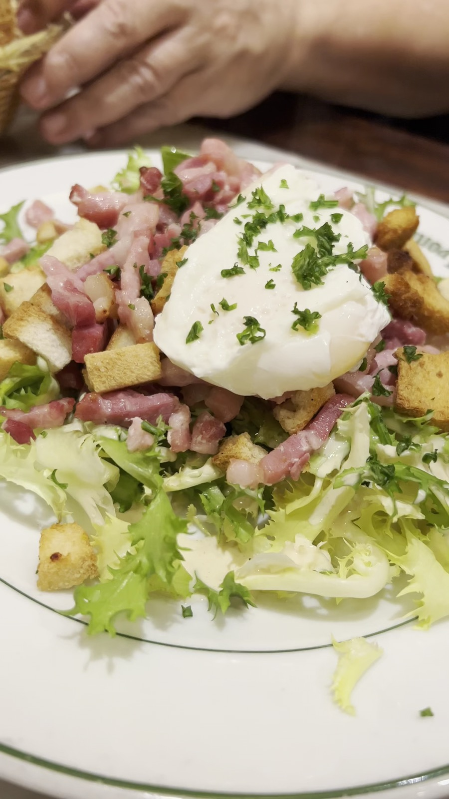
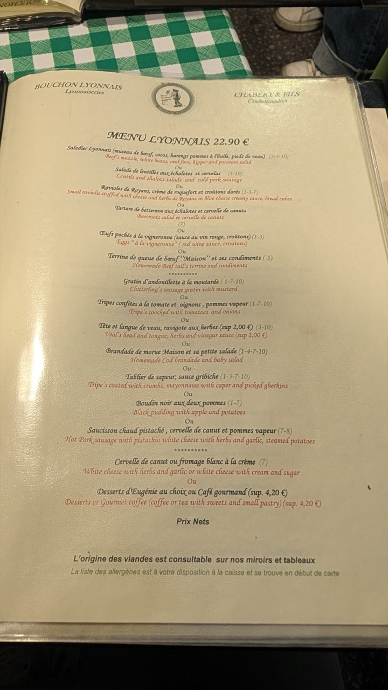
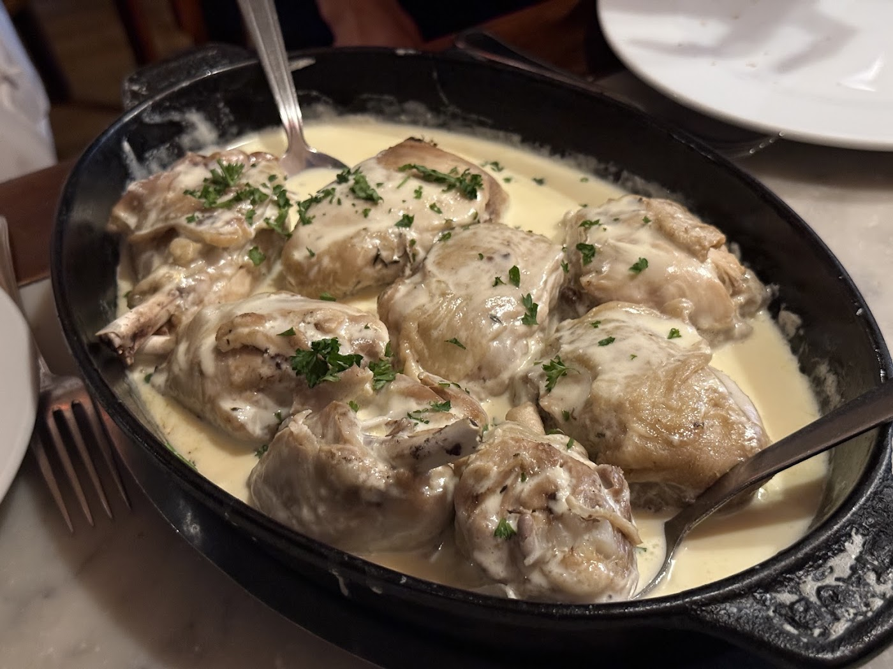
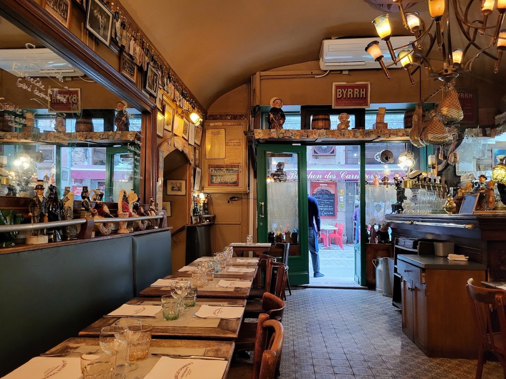
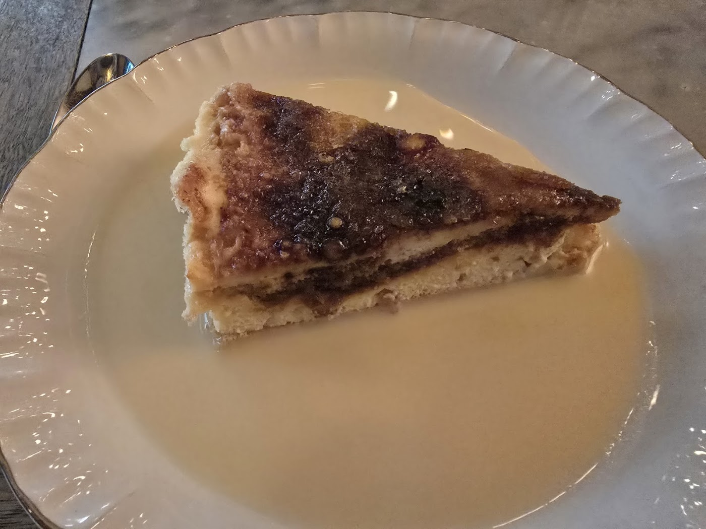
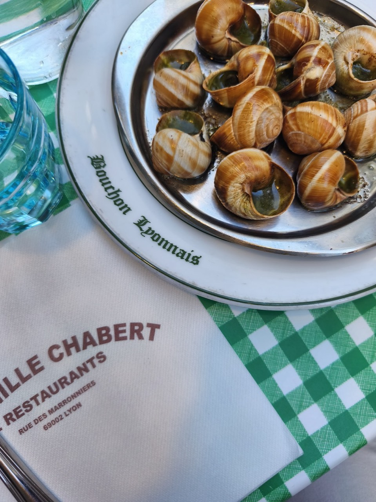
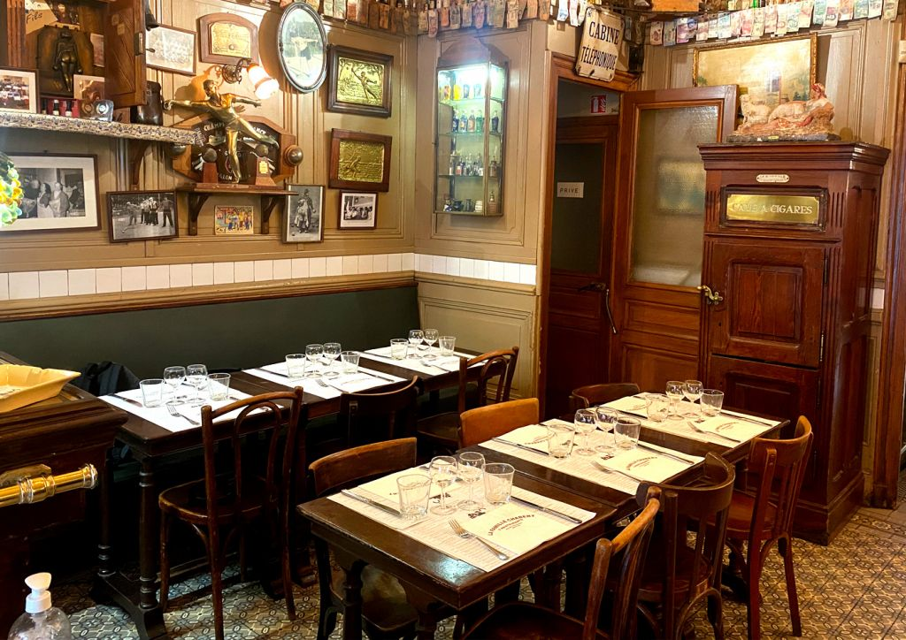

Restaurant · Lyon 2e
Comptoir Chabert et Fils
Les restaurants de la famille Chabert sont plus que des restaurants, c’est un véritable héritage. Un but en commun : préserver la gastronomie qui a fait l’histoire et la renommée de la ville. Le restaurant Chabert et Fils, rue des Marronniers, veut vous emporter dans les traditions de la ville de Lyon, en vous proposant des plats authentiques et traditionnels. Découvrez le meilleur de la gastronomie lyonnaise dans notre restaurant.
Toutes démarches commerciales sont interdites; les emails seront systématiquement bloqués et détruits. Ne perdez pas votre temps!
- Cuisine régionale

En images







Nous trouver
11 Rue Des Marronniers, 69002 Lyon
| Lundi | 12:00–23:00 |
| Mardi | 12:00–23:00 |
| Mercredi | 12:00–23:00 |
| Jeudi | 12:00–23:00 |
| Vendredi | 12:00–23:00 |
| Samedi | 12:00–23:00 |
| Dimanche | 12:00–23:00 |